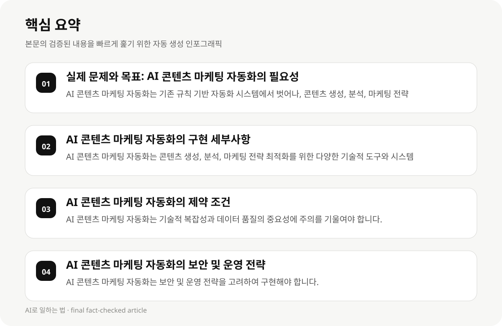

실제 문제와 목표: AI 콘텐츠 마케팅 자동화의 필요성 #
AI 콘텐츠 마케팅 자동화는 마케팅 효율성과 확장성을 높이기 위한 핵심 전략으로, 개발자 및 AI 실무자에게 실용적인 구현 방법과 제약 조건을 설명합니다.
개발자는 기존의 규칙 기반 자동화 시스템에서 벗어나, AI 기반의 자동화를 통해 콘텐츠 생성, 분석, 마케팅 전략 최적화를 실현해야 합니다. 그러나 이 과정에서 기술적 복잡성과 데이터 품질의 중요성에 주의를 기울여야 합니다.
- AI 콘텐츠 마케팅 자동화는 기존 규칙 기반 자동화 시스템에서 벗어나, 콘텐츠 생성, 분석, 마케팅 전략 최적화를 실현해야 합니다.
- 개발자는 기술적 복잡성과 데이터 품질의 중요성에 주의를 기울여야 합니다.
- AI 콘텐츠 마케팅 자동화는 마케팅 효율성과 확장성을 높이기 위한 핵심 전략으로, 실무에서의 구현 방법과 제약 조건을 체계적으로 설명합니다.
AI 콘텐츠 마케팅 자동화의 구현 세부사항 #
AI 콘텐츠 마케팅 자동화는 콘텐츠 생성, 분석, 마케팅 전략 최적화를 위한 다양한 기술적 도구와 시스템을 결합합니다. 개발자는 이러한 도구를 선택하고, 데이터 품질, 모델 정확도, 시스템 연동성 등을 고려해야 합니다.
AI 콘텐츠 마케팅 자동화는 기존의 규칙 기반 자동화 시스템에서 벗어나, AI 기반의 자동화를 통해 콘텐츠 생성, 분석, 마케팅 전략 최적화를 실현해야 합니다. 그러나 이 과정에서 기술적 복잡성과 데이터 품질의 중요성에 주의를 기울여야 합니다.
- AI 콘텐츠 마케팅 자동화는 콘텐츠 생성, 분석, 마케팅 전략 최적화를 위한 다양한 기술적 도구와 시스템을 결합합니다.
- 개발자는 이러한 도구를 선택하고, 데이터 품질, 모델 정확도, 시스템 연동성 등을 고려해야 합니다.
- AI 콘텐츠 마케팅 자동화는 기존의 규칙 기반 자동화 시스템에서 벗어나, AI 기반의 자동화를 통해 콘텐츠 생성, 분석, 마케팅 전략 최적화를 실현해야 합니다.
AI 콘텐츠 마케팅 자동화의 제약 조건 #
AI 콘텐츠 마케팅 자동화는 기술적 복잡성과 데이터 품질의 중요성에 주의를 기울여야 합니다. 개발자는 AI 기반 도구의 구현 시 시스템 연동성, 데이터 품질, 모델 정확도 등을 고려해야 합니다.
AI 콘텐츠 마케팅 자동화는 기존의 규칙 기반 자동화 시스템에서 벗어나, AI 기반의 자동화를 통해 콘텐츠 생성, 분석, 마케팅 전략 최적화를 실현해야 합니다. 그러나 이 과정에서 기술적 복잡성과 데이터 품질의 중요성에 주의를 기울여야 합니다.
- AI 콘텐츠 마케팅 자동화는 기술적 복잡성과 데이터 품질의 중요성에 주의를 기울여야 합니다.
- AI 콘텐츠 마케팅 자동화는 기존의 규칙 기반 자동화 시스템에서 벗어나, AI 기반의 자동화를 통해 콘텐츠 생성, 분석, 마케팅 전략 최적화를 실현해야 합니다.
- 개발자는 AI 기반 도구의 구현 시 시스템 연동성, 데이터 품질, 모델 정확도 등을 고려해야 합니다.

AI 콘텐츠 마케팅 자동화의 보안 및 운영 전략 #
AI 콘텐츠 마케팅 자동화는 보안 및 운영 전략을 고려하여 구현해야 합니다. 개발자는 데이터 보안, 시스템 안정성, 운영 효율성을 고려하여 AI 도구를 구현해야 합니다.
AI 콘텐츠 마케팅 자동화는 기존의 규칙 기반 자동화 시스템에서 벗어나, AI 기반의 자동화를 통해 콘텐츠 생성, 분석, 마케팅 전략 최적화를 실현해야 합니다. 그러나 이 과정에서 보안 및 운영 전략의 중요성에 주의를 기울여야 합니다.
- AI 콘텐츠 마케팅 자동화는 보안 및 운영 전략을 고려하여 구현해야 합니다.
- AI 콘텐츠 마케팅 자동화는 기존의 규칙 기반 자동화 시스템에서 벗어나, AI 기반의 자동화를 통해 콘텐츠 생성, 분석, 마케팅 전략 최적화를 실현해야 합니다.
- 개발자는 데이터 보안, 시스템 안정성, 운영 효율성을 고려하여 AI 도구를 구현해야 합니다.
AI 콘텐츠 마케팅 자동화의 성공 사례 및 실패 사례 #
AI 콘텐츠 마케팅 자동화는 실무에서의 성공 사례와 실패 사례를 통해 구현 방법을 체계적으로 설명합니다. 개발자는 이러한 사례를 참고하여 AI 도구의 구현을 실시해야 합니다.
AI 콘텐츠 마케팅 자동화는 기존의 규칙 기반 자동화 시스템에서 벗어나, AI 기반의 자동화를 통해 콘텐츠 생성, 분석, 마케팅 전략 최적화를 실현해야 합니다. 그러나 이 과정에서 성공 사례와 실패 사례를 고려하여 구현해야 합니다.
- AI 콘텐츠 마케팅 자동화는 실무에서의 성공 사례와 실패 사례를 통해 구현 방법을 체계적으로 설명합니다.
- AI 콘텐츠 마케팅 자동화는 기존의 규칙 기반 자동화 시스템에서 벗어나, AI 기반의 자동화를 통해 콘텐츠 생성, 분석, 마케팅 전략 최적화를 실현해야 합니다.
- 개발자는 이러한 사례를 참고하여 AI 도구의 구현을 실시해야 합니다.
AI 콘텐츠 마케팅 자동화의 비용 및 시간 고려 #
AI 콘텐츠 마케팅 자동화는 구현 시 비용 및 시간 고려가 필수적입니다. 개발자는 AI 도구의 구매, 구축, 운영 시 비용 및 시간을 고려하여 실현해야 합니다.
AI 콘텐츠 마케팅 자동화는 기존의 규칙 기반 자동화 시스템에서 벗어나, AI 기반의 자동화를 통해 콘텐츠 생성, 분석, 마케팅 전략 최적화를 실현해야 합니다. 그러나 이 과정에서 비용 및 시간 고려가 필수적입니다.
- AI 콘텐츠 마케팅 자동화는 구현 시 비용 및 시간 고려가 필수적입니다.
- AI 콘텐츠 마케팅 자동화는 기존의 규칙 기반 자동화 시스템에서 벗어나, AI 기반의 자동화를 통해 콘텐츠 생성, 분석, 마케팅 전략 최적화를 실현해야 합니다.
- 개발자는 AI 도구의 구매, 구축, 운영 시 비용 및 시간을 고려하여 실현해야 합니다.
AI 콘텐츠 마케팅 자동화의 실패 사례 및 해결 방안 #
AI 콘텐츠 마케팅 자동화는 실패 사례를 통해 구현 방법을 체계적으로 설명합니다. 개발자는 실패 사례를 참고하여 AI 도구의 구현을 실시해야 합니다.
AI 콘텐츠 마케팅 자동화는 기존의 규칙 기반 자동화 시스템에서 벗어나, AI 기반의 자동화를 통해 콘텐츠 생성, 분석, 마케팅 전략 최적화를 실현해야 합니다. 그러나 이 과정에서 실패 사례를 고려하여 구현해야 합니다.
- AI 콘텐츠 마케팅 자동화는 실패 사례를 통해 구현 방법을 체계적으로 설명합니다.
- AI 콘텐츠 마케팅 자동화는 기존의 규칙 기반 자동화 시스템에서 벗어나, AI 기반의 자동화를 통해 콘텐츠 생성, 분석, 마케팅 전략 최적화를 실현해야 합니다.
- 개발자는 실패 사례를 참고하여 AI 도구의 구현을 실시해야 합니다.
AI 콘텐츠 마케팅 자동화의 향후 전망 #
AI 콘텐츠 마케팅 자동화는 향후 전망을 고려하여 구현 방법을 체계적으로 설명합니다. 개발자는 향후 전망을 고려하여 AI 도구의 구현을 실시해야 합니다.
AI 콘텐츠 마케팅 자동화는 기존의 규칙 기반 자동화 시스템에서 벗어나, AI 기반의 자동화를 통해 콘텐츠 생성, 분석, 마케팅 전략 최적화를 실현해야 합니다. 그러나 이 과정에서 향후 전망을 고려하여 구현해야 합니다.
- AI 콘텐츠 마케팅 자동화는 향후 전망을 고려하여 구현 방법을 체계적으로 설명합니다.
- AI 콘텐츠 마케팅 자동화는 기존의 규칙 기반 자동화 시스템에서 벗어나, AI 기반의 자동화를 통해 콘텐츠 생성, 분석, 마케팅 전략 최적화를 실현해야 합니다.
- 개발자는 향후 전망을 고려하여 AI 도구의 구현을 실시해야 합니다.
AI 콘텐츠 마케팅 자동화의 참고 자료 #
AI 콘텐츠 마케팅 자동화는 참고 자료를 통해 구현 방법을 체계적으로 설명합니다. 개발자는 참고 자료를 고려하여 AI 도구의 구현을 실시해야 합니다.
AI 콘텐츠 마케팅 자동화는 기존의 규칙 기반 자동화 시스템에서 벗어나, AI 기반의 자동화를 통해 콘텐츠 생성, 분석, 마케팅 전략 최적화를 실현해야 합니다. 그러나 이 과정에서 참고 자료를 고려하여 구현해야 합니다.
- AI 콘텐츠 마케팅 자동화는 참고 자료를 통해 구현 방법을 체계적으로 설명합니다.
- AI 콘텐츠 마케팅 자동화는 기존의 규칙 기반 자동화 시스템에서 벗어나, AI 기반의 자동화를 통해 콘텐츠 생성, 분석, 마케팅 전략 최적화를 실현해야 합니다.
- 개발자는 참고 자료를 고려하여 AI 도구의 구현을 실시해야 합니다.